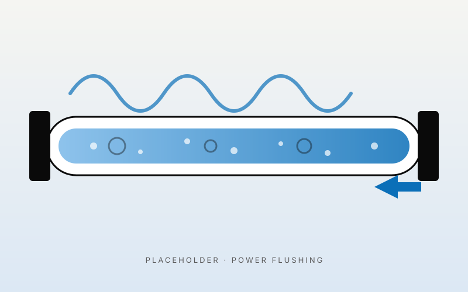

If you've got cold spots at the bottom of your radiators, slow-warming heating, banging or kettling noises from the boiler, or rusty water when you bleed a radiator — your system is full of magnetite sludge. It's the same in three out of every four older homes we go into in Limerick. A power flush is the way you get rid of it, and it's one of the highest-return jobs you can do on an older heating system. Restored efficiency, longer boiler life, valid warranty if you've just installed a new boiler.
What's included
- Connection of professional flushing rig (Kamco or similar) to the system
- Chemical treatment to break up sludge and limescale across all radiators
- Flush of every radiator individually with high-flow rates and direction reversal
- Final clean water test until the discharge runs clear
- Addition of a quality system inhibitor (usually Sentinel X100) to protect against future sludge
- Fitting of a magnetic system filter if one isn't already there (we strongly recommend it)
- Pre- and post-flush temperature readings on each radiator so you can see the difference
Signs your system needs a power flush
If two or more of these ring true, it's almost certainly worth getting the system flushed.
Cold spots at the bottom of radiators
Hot at the top, cold along the bottom — classic sludge buildup.
Some radiators don't heat or take ages to warm
Sludge restricts flow. The radiators furthest from the boiler suffer first.
Banging, kettling or whistling noises from the boiler
Sludge in the heat exchanger causing localised boiling.
Rusty / black / brown water when bleeding a radiator
That's the sludge. Clear or light grey water is fine.
System pressure dropping repeatedly
Sometimes related — sludge can hide leaks and damage pumps.
Recent boiler install with sludge in the old system
If you didn't flush before fitting a new boiler, the warranty is probably void and the new boiler will fail early.
How much does a power flush cost in Limerick?
Typical Limerick home flushes: €450 for up to 8 radiators, €550 for 9–12 radiators, €650+ for larger homes. Includes chemical treatment, full flush, inhibitor and (where needed) a new magnetic filter (€80–€120 fitted). A power flush typically takes 4–6 hours on a standard 3-bed home. It's one of the best-value jobs you can do on an older system — the gas savings alone usually pay for it inside two heating seasons.
When a flush isn't the answer
Sometimes a flush won't help — and we'll tell you straight. If you've got a microleak, a damaged radiator, a failed pump or a system that's so old the pipework itself is corroded internally, a flush is throwing good money after bad. We always test the system first. If the answer is a different fix, we'll quote that instead. We'd rather lose a flush job than do one that doesn't help you.
Frequently asked questions
How long does a power flush take?
Most Limerick homes: 4–6 hours. Bigger systems (large family homes in Castletroy or rural homes in Clare): 6–8 hours.
Can I do it myself with one of those chemicals from the hardware shop?
Pouring a sludge remover into the system and running the heating for a week ("chemical flush") helps a bit, but it doesn't actually move the sludge out — it just breaks it up. A power flush physically pumps it out. There's no comparison.
Will it damage my radiators?
If your radiators are sound, no — modern flushing equipment runs at relatively gentle pressure. Very old, corroded radiators can sometimes spring leaks during a flush — but if a flush would expose them, they were probably about to leak anyway.
Do I need a flush if I'm getting a new boiler?
Almost always yes. Manufacturer warranties (Worcester, Vaillant, Ideal) all require the system to be flushed and treated with inhibitor when a new boiler is fitted. Skip it and the warranty is void.
How often should it be done?
If your system has a magnetic filter and you keep up with annual services, possibly never again. If neither of those, every 6–8 years is a sensible interval for an older system.
Areas we cover for power flushing
We cover all of Limerick city and county, most of Clare and into north Tipperary. Some popular areas: